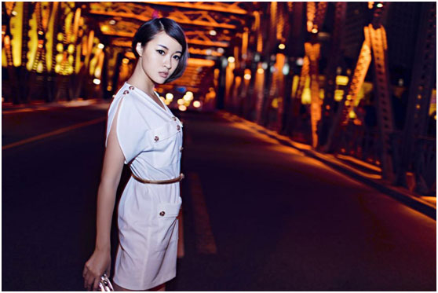

漂移大使团再添明星成员 音乐才女阿悄加盟《一起来飞车》
全能才女惊艳加盟，《一起来飞车》漂移大使团再添明星成员！今日，《一起来飞车》官方正式对外宣布励志文艺莎“阿悄”加入《一起来飞车》“漂移大使团”，成为官方“漂移大使”中的一员，后续还会有更多的明星加入，精彩不停！作为内地新星中第一位集词曲创作、设计、导演为一身的才女艺人，阿悄励志的成长经历、独特的曲风和坚实的创作功底，让她俘获了无数人的青睐。而她不屈服、努力挑战的性格，更是与《一起来飞车》所崇尚的竞技精神极为契合。此次阿悄出任《一起来飞车》漂移大使的合作，相信会给玩家带来不一样的娱乐游戏体验。
【全能才女 情感与音乐融合】
阿悄从2009年开始，便在网络上凭借独特的曲风和坚实的创作功底获得了粉丝的肯定。2011年加入国内90后音牌“gogomusic”，2012年2012年创办阿悄导演工作室，自导自拍自演多部音乐MV，并独立策划网络首档月播90后视频栏目《走走音乐》。成为内地新星中第一位集词曲创作、设计、导演为一身的才女艺人。自2013年至今，阿悄已经发布六张个人专辑，获得了校园人气歌手大奖、年度跨界艺人、音乐流行榜年度最热搜索等大奖。对于自己的成绩，阿悄曾表示“把感情融在声音里，才会去创作、唱歌，才有了今天在音乐道路上孜孜不倦的自己。”。
【励志文艺莎 追求音乐梦想的女生】
在提到阿悄的时候，人们往往会冠以“励志文艺莎”的名号。而这，正是对阿悄感动无数人的个人历程诠释。当年在网络上走红的艺人，并不如当下如此风光,曾经历过很多不为人知的艰辛。但她从来没有放弃过对音乐和梦想的追求。《陪我去流浪》，便是阿悄自己经历的真实写照。正是她这种不屈、不怕、努力的精神，赢得了无数粉丝的青睐；同时，阿悄安安静静地进行创作和演唱，不浮夸、不炒作，坚守本心追求的行为，更是让人们极为珍惜这个90后女生。

【全新的漂移大使 不一样的惊喜】
无论是阿悄的性格还是对音乐的执着努力，都与《一起来飞车》中追求极致漂移、竞技的精神极为契合。在阿悄担任“漂移大使”后，这样一位代表90后实力原创女歌手的代表，同时也是一名新手导演的她，与游戏深度合作后会给赛场上的玩家带来哪些视听全方面的惊喜呢？让玩家可以更尽享首款3D竞速手游带来的惊艳畅快感受呢？让我们拭目以待。
【关于一起来飞车】
《一起来飞车》是英雄互娱旗下全球首款3D漂移竞速手游，重现拉漂、双喷、连喷等多种飞车核心玩法，带来最纯粹的漂移体验。数十条场景华丽的赛道让你置身不同的赛车世界，感受迷人的异域风情；百变造型炫酷拉风，突破你对赛车的一切想象，打造最潮竞速体验；多样化的装扮系统，打造最与众不同的你；战队赛捍卫家族荣誉，LBS玩法与身边车友实时互动，与好友一起激情狂飙！多种玩法打造全新飞车手游，开启4亿手机玩家漂移狂欢!